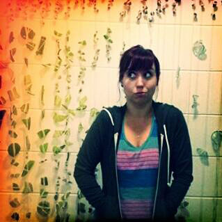

I'm a full-stack web developer specializing in the MEAN and Django stacks. I currently live in upstate New York, but spent most of my life in the Pacific Northwest. I love cats, video games, kayaking, and Harry Potter.
Prior to entering the world of web development I was an assistant auditor at a local health insurance company. I enjoy data analysis, interpretation and interpolation, value precision and efficiency, and thrive in structured environments.
I believe in compassion, empathy, knowledge and inclusion.